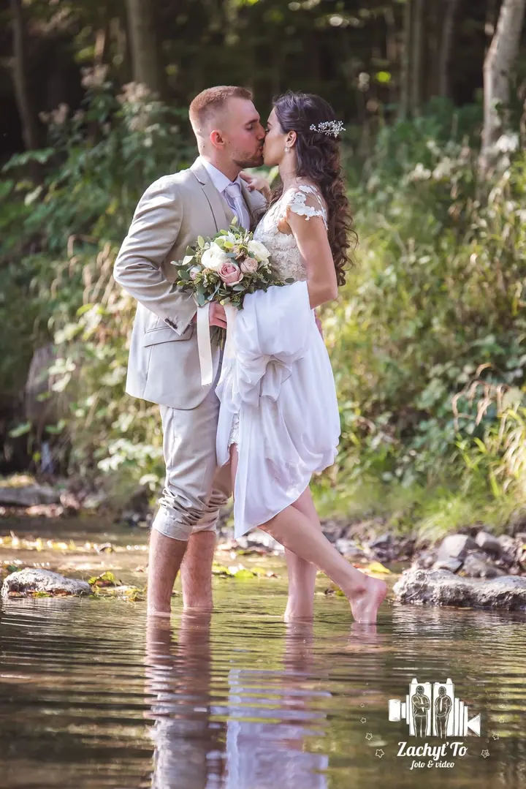
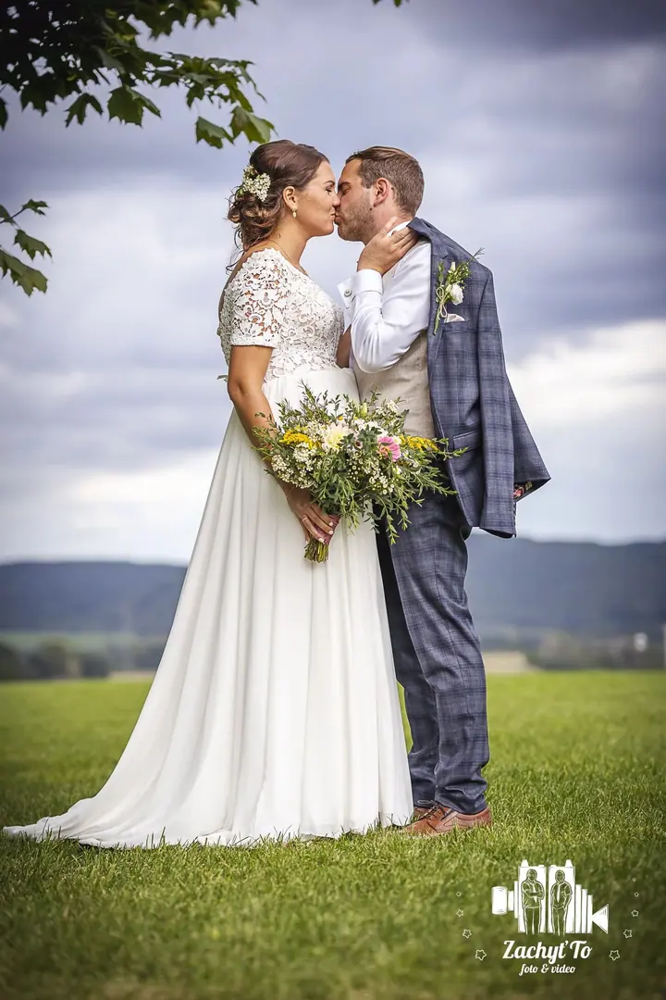
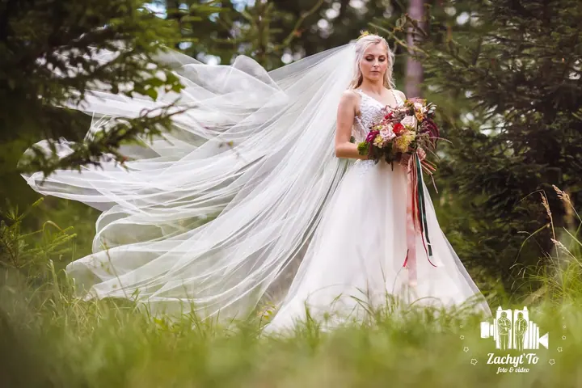
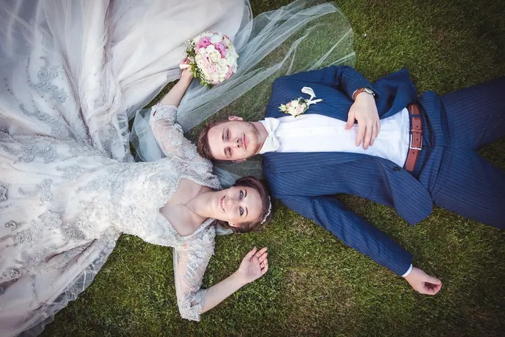

jedna
Svatební fotografie
Fotím reportážně, bez zbytečných zásahů a strojených póz. Zachycuji skutečné emoce, drobné momenty i atmosféru celého dne.

Svatební fotograf a kameraman · Litoměřice, celá ČR

Jmenuji se Radek Adámek a spolu s bratrem Danielem fotíme a natáčíme svatby od roku 2014. Jezdíme z Litoměřic po celé ČR a ke každé svatbě přistupujeme, jako by byla naše vlastní.
Více o mně
Co dělám
jedna
Fotím reportážně, bez zbytečných zásahů a strojených póz. Zachycuji skutečné emoce, drobné momenty i atmosféru celého dne.
Svatbu natáčí můj bratr Daniel. Dostanete svatební klip na 3 až 5 minut, dlouhé reportážní video a minutový reel na sociální sítě, a když to situace dovolí, natočíme i záběry z dronu.
Samoobslužný fotokoutek je u nás zdarma, s tiskem fotografií i bez tisku. Hosté si v něm kdykoli během dne i večera vytvoří vlastní snímky.
Kromě svateb fotíme a natáčíme i plesy, ať vám po večeru zůstanou fotky i video.
Svatební den není focení na povel.

Za objektivem
Jsme sehrané duo, žádní dva externisté. Já fotím, Daniel natáčí a během svatebního dne si rozumíme beze slov. Víme, kdy ustoupit do pozadí a kdy být ve správný čas na správném místě, abychom si nepřekáželi a fotky s videem spolu dávaly smysl.
Focení svateb mě prostě baví. Rád poznávám nová místa i nové svatebčany a největší radost mi udělá, když z výsledku máte opravdovou radost. Fotografie i video pečlivě upravujeme ve stylu cinema-wedding a ladíme barvy, střih i hudbu, aby vznikla přirozená a nadčasová vzpomínka.
Než přijde váš den, rádi se s vámi potkáme osobně nebo online a projdeme ho krok za krokem. Vy přesně víte, co dostanete, a my víme, co je pro vás důležité.
Radek
Potkáme se osobně nebo online, projdeme celý svatební den krok za krokem a sladíme očekávání.
Pracujeme reportážně a nenápadně. Fotograf a kameraman spolu celou dobu komunikují, aby byl výsledek přirozený a ucelený.
Fotky i video upravujeme ve stylu cinema-wedding, ladíme barvy, střih i hudbu.
Fotky dostanete v online galerii i v tištěné podobě, k tomu svatební klip, dlouhé video a minutový reel, pokud máte i video.
Portfolio
Otázky
Balíček za 20 000 Kč obsahuje minimálně 250 upravených fotografií, až 12 hodin na svatbě, fotky v tištěné podobě, fotoobraz na plátně 60 × 90 cm, online galerii a online zálohu. Instax vám půjčíme zdarma.
Ano, fotíme po celé ČR a doprava je v balíčku zdarma.
Svatební klip stříháme zhruba na 3 až 5 minut. Dlouhé video má podle programu kolem 10 až 20 minut, ve verzi se dvěma kamerami 20 až 45 minut. K tomu dostanete minutový reel na sociální sítě.
Fotokoutek je u nás bez příplatku, s tiskem fotografií i bez něj. Je plně samoobslužný, takže ho hosté zvládnou sami a nepotřebujete žádný personál.